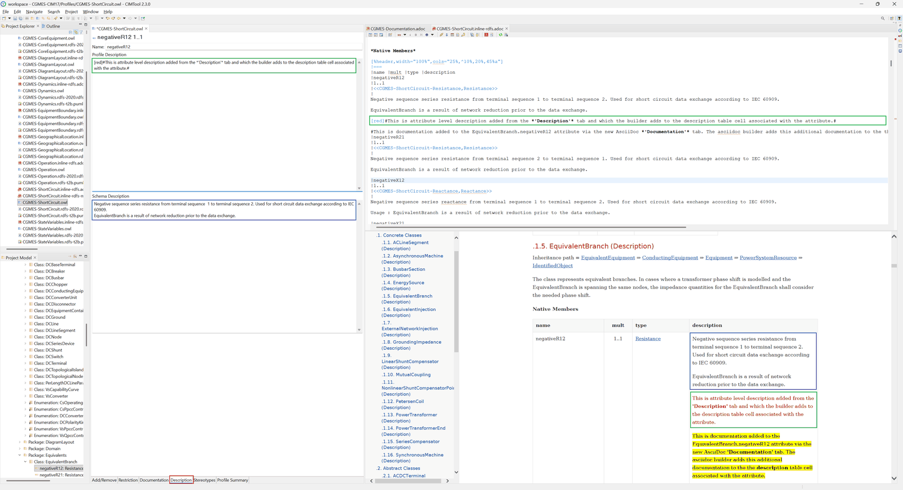
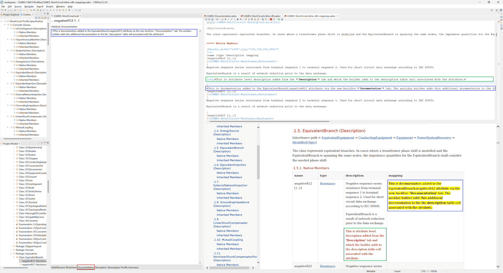
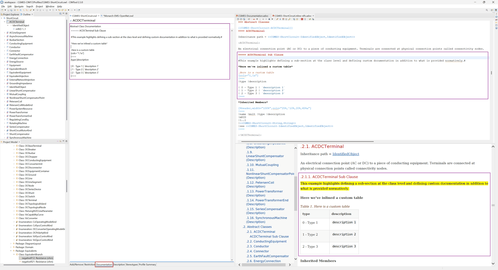
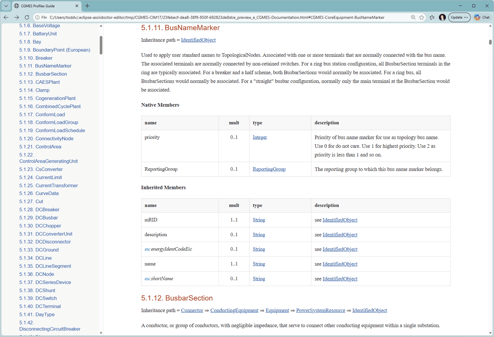
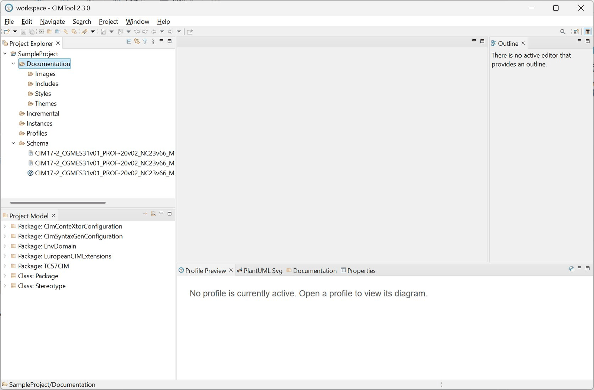
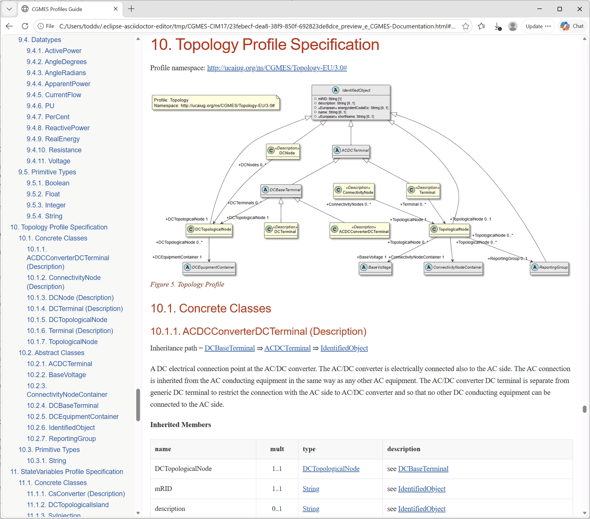
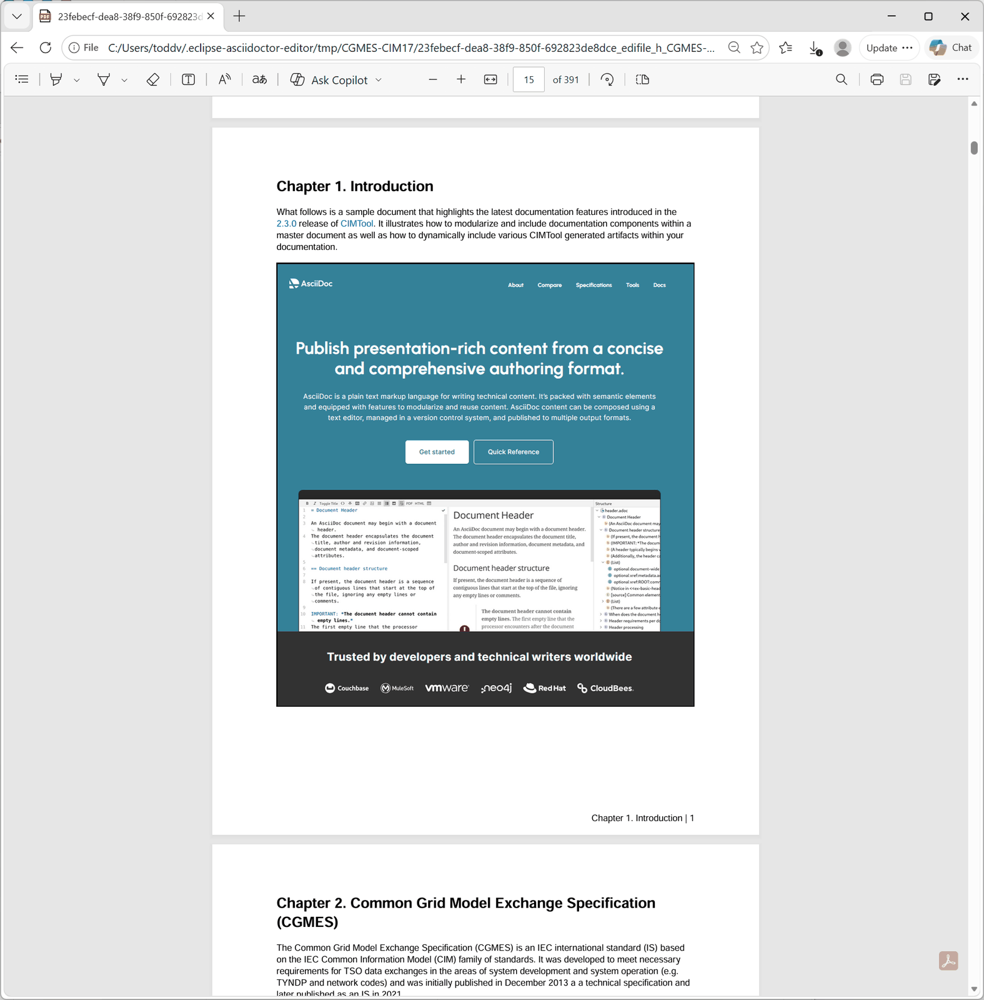
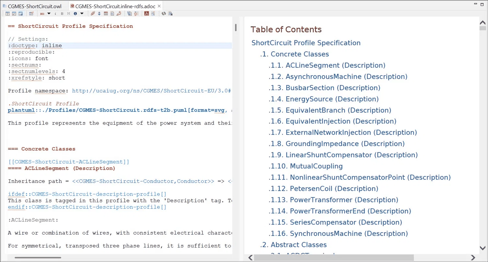

Project and Profile Documentation
CIMTool generates documentation from your profiles: readable descriptions of every class, attribute, association and enumeration, produced by builders from the profile itself. Because the documentation is generated, it stays in step with the profiles. Change a profile, save it, and its documentation is rebuilt.
Since CIMTool 2.3.0, documentation is more than a description of one profile. A project can hold a complete, published document, such as a specification covering several profiles, assembled from generated documentation and your own chapters, and rendered to HTML or PDF. This topic covers both: documentation for a single profile, and documentation for a whole project.
Profile Documents Before CIMTool 2.3.0
Before CIMTool 2.3.0, documentation was defined one profile at a time, by two builders that each produce a single file describing a profile:
| Builder | Output | Contents |
|---|---|---|
html | MyProfile.html: one web page | The profile's own description, then sections for concrete classes, abstract classes, enumerations, compound types, datatypes and primitive types. Each class lists its native and inherited members with their cardinality, type and descriptions. |
profile-doc-rtf | MyProfile.rtf: a Rich Text Format document | The profile namespace, then sections for concrete classes, abstract classes, compound types and enumerations, with member tables and descriptions. |
Both builders are still available and are designed to document a profile whatever its target: RDFS, XSD or JSON Schema. They use the Schema Description and Profile Description of each element (see Where the Text Comes From), but not the Documentation tab, and they include no diagrams.
To produce them, check html, profile-doc-rtf or both on the Profile Summary tab and save the profile. The files appear in the Profiles folder, next to the profile. Open the .html file in a web browser, or the .rtf file in Microsoft Word, where you can edit it further and save it as a Word document (.docx) or a PDF.
Choosing the Scope: One Profile or the Whole Project
CIMTool 2.3.0 added builders that generate documentation in AsciiDoc, a project Documentation folder, and master documents that assemble a complete publication. You do not have to use all of these. Choose by what you need to publish:
| You need | Use | You get |
|---|---|---|
| Documentation for one profile | Any of these standalone builders:
| One self-contained document per profile, in the Profiles folder. An article includes the profile diagram and the Documentation tab text, and renders to HTML or PDF. |
| Documentation for the project | The AsciiDoc inline builders for each profile, and a master document in the Documentation folder | One publication that combines several profiles with your own chapters, rendered to HTML or PDF (see Project Documentation). |
Whichever you choose, the text in the documentation comes from the same place: the Description and Documentation tabs of the Profile Editor.
Where the Text Comes From: the Description and Documentation Tabs
Every element of a profile, and the profile itself, can carry three pieces of text. Two of them are on the Description tab and one is on the Documentation tab. The two tabs work together: what you write on each, and where it ends up, only makes sense when they are considered side by side.
| Text | Where you see it | What it is |
|---|---|---|
| Schema Description | Description tab (read-only) | The normative description from the UML model. It reflects the CIM as published and cannot be changed in CIMTool. |
| Profile Description | Description tab | A short description you write for this profile: how the element is used in this profile, or what it adds to the schema's definition. |
| Documentation | Documentation tab | Longer documentation you write in AsciiDoc, with a full-page editing area. New in CIMTool 2.3.0. |
Select an element in the Outline view to see or edit its text. Select the profile itself, at the top of the Outline, to write text about the profile as a whole.
Where Each Piece of Text Goes
The three pieces of text reach different outputs. This is the main thing to understand when deciding where to write something.
| Text | Generated schemas (RDFS, XSD, JSON Schema) | HTML and RTF documents | AsciiDoc builders | AsciiDoc mappings builders |
|---|---|---|---|---|
| Schema Description | Yes | Yes | Yes, in the description | Yes, in the description column |
| Profile Description | Yes | Yes | Yes, in the description | Yes, in the description column |
| Documentation | No | No | Yes, in the description | Yes: for attributes and associations in a separate mapping column, otherwise in the description |
This is by design. The Profile Description is part of the profile's definition, so it is written into every schema generated from the profile. The Documentation tab text is stored in the profile's OWL file with the rest of the profile, but it is documentation for human readers, so it is used only by the AsciiDoc builders and never written into a schema.
Where two or more pieces of text appear together, they appear in the order of the table: the Schema Description first, then the Profile Description, then the Documentation.

The Description tab for the
negativeR12 attribute (left) and the documentation generated by adoc-inline-rdfs (right). In the rendered description cell, the Schema Description (blue) comes first, then the Profile Description (green), then the text from the Documentation tab (yellow).
Choosing Where to Write
- Use the Profile Description for what every reader needs. It is the only text of your own that reaches the generated schemas, so it is what a developer reading the XSD, JSON Schema or RDFS sees. Keep it short and write it as plain text.
- Use the Documentation tab for everything else. Explanations, usage rules, examples, tables, sub-headings and code samples belong here. It has a much larger editing area and accepts any AsciiDoc.
- With a mappings builder, use the Documentation tab for mappings. The mappings builders put the Documentation tab text of attributes and associations in its own mapping column, which makes it the natural place to record how an element maps to another information model or a third-party system.
Formatting in the Profile Description. Treat the Profile Description as plain text. The generated schemas carry it exactly as typed, so AsciiDoc markup would appear there as literal characters. The AsciiDoc builders honor simple formatting in it only inside member tables (as in the [red]#...# example above). In a class or profile description they print characters such as *, ` and [ literally. For formatted text, use the Documentation tab.
AsciiDoc Documentation
CIMTool 2.3.0 added builders that generate documentation in AsciiDoc, a plain-text format designed for technical documentation. AsciiDoc is easy to write, works well with version control, and renders to HTML and PDF. The documentation CIMTool generates is AsciiDoc, the text you write on the Documentation tab is AsciiDoc, and CIMTool includes an AsciiDoc editor with a live preview (see Editing AsciiDoc in CIMTool).
Article and Inline Builders
There are eight AsciiDoc builders, in two families of four:
- Article builders produce a complete, standalone document for one profile, with its own title, table of contents and section numbering. Use them when you need documentation for a single profile.
- Inline builders produce a fragment with no document title, starting at a section heading. Use them for project documentation: a master document includes the fragment and controls the overall structure (see Project Documentation).
| Builder | Output file | For profiles targeting | Diagram it embeds |
|---|---|---|---|
adoc-article-rdfs | .article-rdfs.adoc | RDFS | .rdfs-t2b.puml |
adoc-article-rdfs-mappings | .article-rdfs-mappings.adoc | RDFS | .rdfs-t2b.puml |
adoc-article-xsd | .article-xsd.adoc | XSD | .xsd-l2r.puml |
adoc-article-json | .article-json.adoc | JSON Schema | .json-l2r.puml |
adoc-inline-rdfs | .inline-rdfs.adoc | RDFS | .rdfs-t2b.puml |
adoc-inline-rdfs-mappings | .inline-rdfs-mappings.adoc | RDFS | .rdfs-t2b.puml |
adoc-inline-xsd | .inline-xsd.adoc | XSD | .xsd-l2r.puml |
adoc-inline-json | .inline-json.adoc | JSON Schema | .json-l2r.puml |
Check the diagram builder too. Each AsciiDoc builder embeds the profile's PlantUML diagram, but does not create it. On the Profile Summary tab, also check the PlantUML builder named in the last column (puml-rdfs-t2b, puml-xsd-l2r or puml-json-l2r), or the documentation shows a missing diagram.
What the Generated Documentation Contains
An article starts with an overview giving the profile namespace and the profile diagram, followed by the profile specification. The text you wrote for the profile itself (its Profile Description and Documentation) opens the profile specification. Then come sections for concrete classes, abstract classes, enumerations, compound types and datatypes. Each class has a heading, its inheritance path, its descriptions and documentation, and tables of native and inherited members. In the member tables, the description column holds each member's text, in the order described in Where Each Piece of Text Goes.
The mappings builders produce the same documentation with one addition: the member tables of classes have a mapping column, filled from the Documentation tab of each attribute and association. The Documentation tab text of the profile, classes and enumeration values still appears in their descriptions. Mappings builders are currently available for RDFS profiles only.

With
adoc-inline-rdfs-mappings, the Documentation tab text for negativeR12 (blue, left) appears in the mapping column (blue, right), while the Profile Description (green) stays in the description column with the Schema Description.
Headings, Tables and Code in the Documentation Tab
Because the Documentation tab accepts any AsciiDoc, you can add your own structure to an element's documentation: sub-headings, lists, tables, admonitions and source code. The builders fold it into the generated document, so a sub-heading becomes a numbered subsection of the class and appears in the table of contents. Since CIMTool 2.3.1, the whitespace you type is kept, so indentation in code samples is preserved exactly.

Class documentation for
ACDCTerminal: a sub-section heading (=====) and a table written on the Documentation tab (left) become subsection 2.1.1 and a titled table in the generated documentation (right).
Start sub-headings in the Documentation tab at level 5 (=====) for a class, so they fall beneath the class's own heading.
Marking Extension Members with Namespace Prefixes
When a profile uses attributes and associations from extension namespaces, such as the European (ENTSO-E) extensions to the CIM, the AsciiDoc builders can mark those members with a short namespace prefix, such as eu:, so readers can tell extension members from normative CIM members.

The European extension members
energyIdentCodeEic and shortName carry the eu: prefix; the normative CIM members mRID, description and name have none.
The prefixes come from a .namespace-prefixes file in the Schema folder. It has the same name as the project's Enterprise Architect project file, with a .namespace-prefixes extension, and is imported with the schema. Each line maps a prefix to a namespace URI; lines starting with # are comments:
nc=http://entsoe.eu/ns/nc# eu=http://iec.ch/TC57/CIM100-European# eumd=http://entsoe.eu/ns/Metadata-European#
- The file is optional and affects only the AsciiDoc documentation, not the profile.
- It works only when the schema is an Enterprise Architect project file (
.eap,.eapx,.qeaor.qeax), not an XMI or OWL schema. - It is separate from the
.namespacesfile used when importing a schema (see CIMTool Namespace Support), and does not need one. - Namespace URIs must match the model exactly, including letter case.
Project Documentation
Project documentation is a single publication for the whole project: for example, a specification covering a set of related profiles, with your own introduction, overview and other chapters. You write it as a master document, an AsciiDoc file in the project's Documentation folder that pulls in your own text and the generated inline fragments with AsciiDoc's include:: directive.
The Documentation and Profiles Folders
Every CIMTool project has five folders: Documentation, Incremental, Instances, Profiles and Schema. Two of them matter for documentation. The builders write their generated documentation into Profiles, next to each profile. The Documentation folder, added in CIMTool 2.3.0, is where you assemble generated documentation with your own text.

A new project in the Project Explorer, with its five folders.
The Documentation folder is created with four subfolders. The master document itself goes at the root of the Documentation folder.
| Subfolder | For |
|---|---|
| Images | Images used in your documents: diagrams, screenshots and logos. |
| Includes | Your own AsciiDoc text (.adoc), in pieces that the master document includes. You can organize it in subfolders. |
| Styles | CSS stylesheets (.css) for HTML output. |
| Themes | Theme files (.yml) for PDF output. |
The Master Document
The master document starts with a header that sets document-wide options and defines where to find each kind of content. This example is from the master document of the public CGMES-CIM17 sample project, a complete worked example:
= CGMES Profiles Guide
:profilesdir: {docdir}/Profiles
:includedir: {docdir}/Documentation/Includes
:pdf-themesdir: {docdir}/Documentation/Themes
:pdf-theme: cgmes-adoc
:stylesdir: {docdir}/Documentation/Styles
:stylesheet: cgmes-adoc.css
:doctype: book
include::{includedir}/introduction.adoc[]
include::{includedir}/cgmes-overview.adoc[]
include::{profilesdir}/CGMES-CoreEquipment.inline-rdfs.adoc[]
include::{profilesdir}/CGMES-Operation.inline-rdfs.adoc[]
include::{includedir}/conclusion.adoc[]
- Paths start at the project root. In CIMTool,
{docdir}is always the project root, even though the master document is in the Documentation folder, so write every path from there. :doctype: bookgives the multi-chapter structure a large specification needs.:stylesheet:and:pdf-theme:apply your own look to HTML and PDF output, from the Styles and Themes subfolders.- Each inline fragment starts at its own section heading, so it falls into place beneath the master document's structure.
The profilesdir attribute. The generated documentation finds its PlantUML diagrams through {profilesdir}. Since CIMTool 2.3.1, CIMTool keeps a .asciidoctorconfig.adoc file in the Profiles folder that defines it, so a generated article or fragment also renders on its own. Leave that file in place. Defining :profilesdir: in the master document, as above, makes the location explicit. Outside CIMTool, for example with the Asciidoctor command line, pass it with -a profilesdir=....
The Result
Render the master document to HTML or PDF from the AsciiDoc editor (see Editing AsciiDoc in CIMTool). Both outputs apply your styling and have a generated table of contents, with page numbering across the whole PDF.

The CGMES Profiles Guide rendered to HTML.

The same guide rendered to PDF, as a book-style specification.
Editing AsciiDoc in CIMTool
CIMTool includes the Asciidoctor editor, which opens when you open any .adoc file: a master document, an Includes file, or a generated article or fragment. It shows the AsciiDoc source and a live rendered preview side by side.

The Asciidoctor editor: source on the left, rendered preview with table of contents and section numbers on the right.
- Toolbar. Buttons arrange the source and preview, insert headings, formatting, admonitions, links, anchors, tables and code blocks, and show or hide the table of contents. Others preview the document in an external browser, create a temporary PDF, rebuild the preview (F5) after included files change, and clear the editor's cache.
- Rendering preferences. The rendering preferences button defines AsciiDoc attributes for the preview. These override attributes of the same name in your documents, so if a document ignores an attribute set in its own header, check here.
- Configuration file. The editor creates a
.asciidoctorconfig.adocfile the first time you open an.adocfile in a folder. Leave it in place.
The Documentation tab itself is a plain text area without a preview. To check how an element's documentation looks, save the profile and open the generated .adoc file in the Asciidoctor editor.
For the full editor toolbar and an AsciiDoc syntax quick reference, see Using CIMTool Documentation Features on the CIMTool website, and the AsciiDoc Syntax Quick Reference.